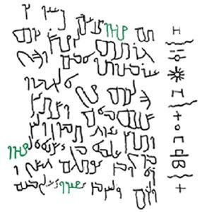
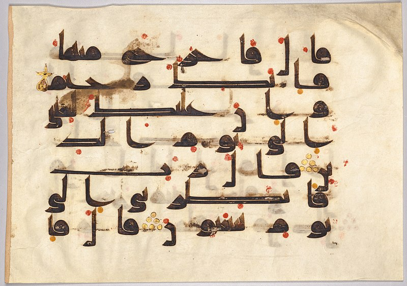
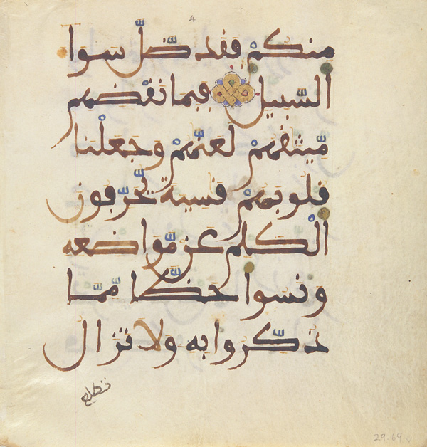
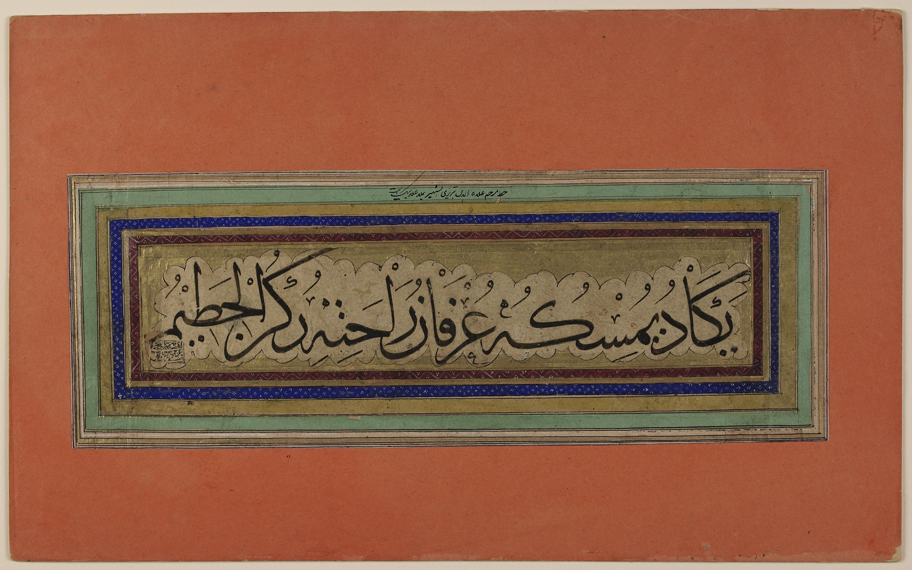
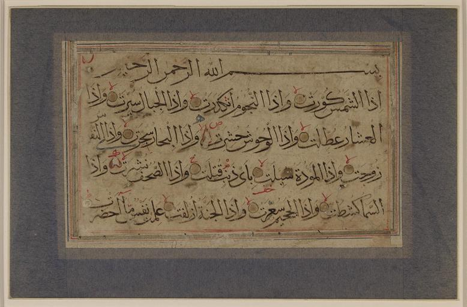
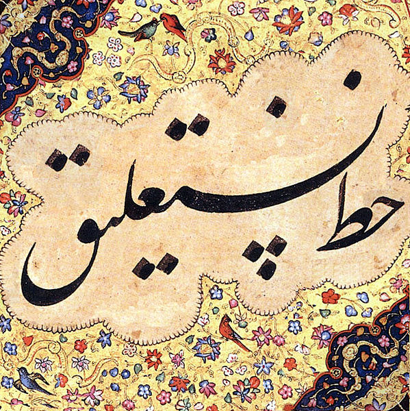
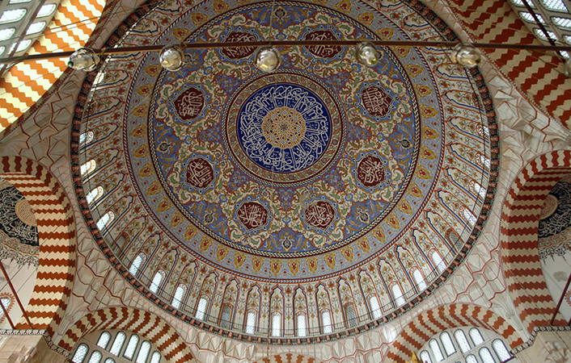

The Arabic script is believed to have developed from the Nabataean script.
The Nabataean script was not anywhere near the Arabic scrript in terms of beauty and integrity.
The Qur'an was preserved orally but due to concerns The Qur'an was compiled into a book form. This was done using the Kufic script which takes its name from the city of Kufa in Iraq. Two forms of scripts were used during the early periods of Islam: the Kufic and the curly script.

The Kufic script only had letter. The 'Nuqthas' as we know them today were not present for some of the letter. Kufic did not have vowel signs as well.

Kufic was popularly used for 300 years. From the 7th century CE to the 10th. Islam spread to Africa in the 7th and so did the Kufic script. The Kufic script was developed by the African Muslims and this Kufic was known as the Afriqi Kufic.
Later, the Kufic script spread to the Iberian peninsula in the 8th century CE. There, the Kufic script was developed yet again and this type was known as the Andalusi Kufic. The African and Iberian Kufic scripts are called Maghrebi scripts. 'Maghreb' as in Morocco or the West.

The Thuluth script started to develop as early as the 7th century but developed completely by the 10th century. 'Thuluth' which literally means one-third in Arabic. This is because ⅓ of each letter is tilted. Ahmad Tayyib Shah is credited for the refinement of the script which is how we know it today.

Naskh comes from the Arabic word 'Naskha' which means 'to copy'. This is because the Naskh script was used to copy The Holy Qur'an. The Nask script is said to have emerged in the 10th century. Naskh is believed to have been developed in Egypyt. However, the exact origins of Naskh script are unknown.

'Nastaliq' is the amalgamation of two scripts that already exited at the time: the Naskh and the Taliq. Developed in Persia region on the 15th and the 16th centuries. 'Taliq' means 'hanging', this word was chosen because the Taliq script is written at a slope instead of a straight horizontal line like almost all the other scripts.

Geometry started to be seen in Islamic artwork, design, calligraphy in the 8th Century CE. Historians believe Muslims took inspiration from Persian and Roman architecture.
We know the beautiful happenings thereafter!
